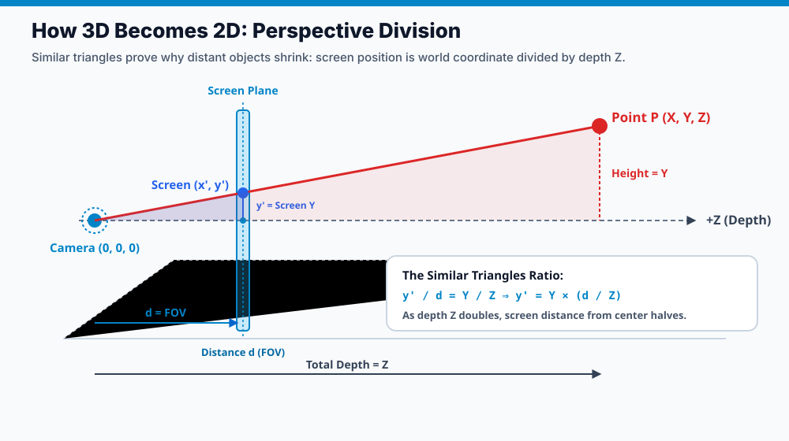
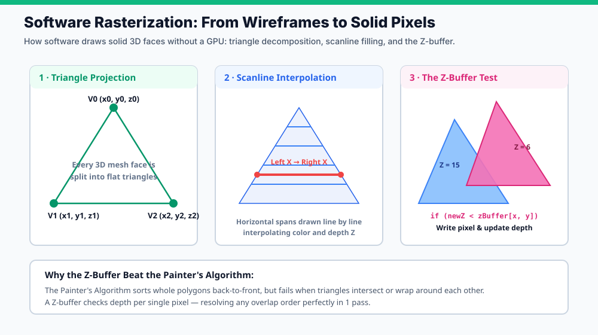
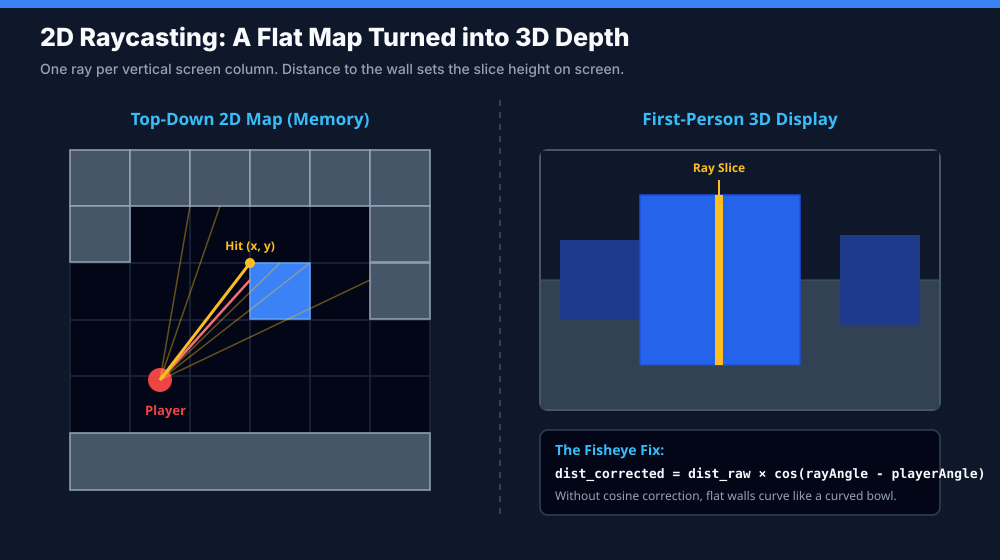
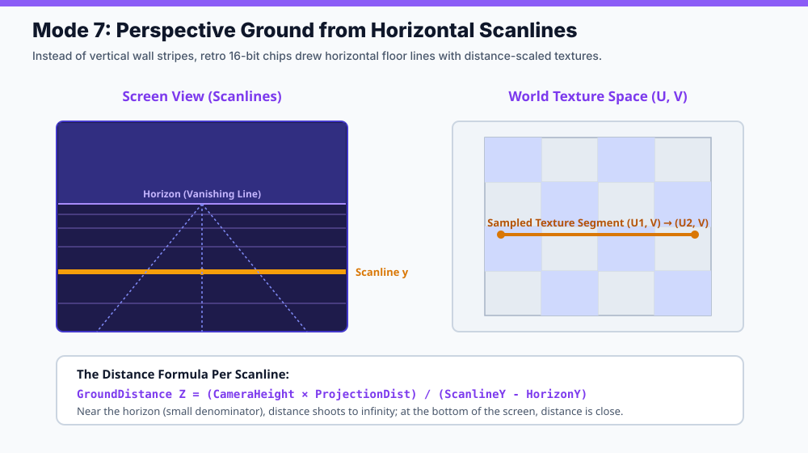
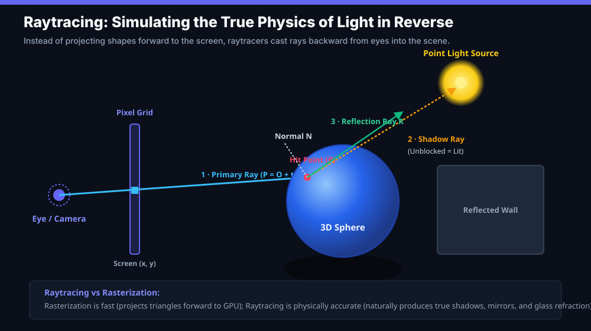

1 · Grid DDA
Classic 90-degree tile grid walls. Fastest possible calculation; used in Wolfenstein 3D.
Interactive Studio · Pure 2D Canvas Math · Zero 3D Libraries
Interact with the core algorithms that trick human eyes into seeing 3D space on a flat glass screen. Switch between perspective wireframes, Wolfenstein 2D raycasting, SNES Mode 7 ground planes, and mathematical raytracing.
Walk through the maze using W A S D or the directional arrows below.
Scanline Ground Distance: Z = (Height × Dist) / (y - HorizonY)
Shadow Ray: blocked by sphere ⇒ 0 diffuse light (hard shadow)Reflection Ray: R = D - 2(D · N)N ⇒ samples floor colors
Computer Science · Graphics & Game Development · Math Algorithms
Every computer monitor, phone screen, and VR display in the world is completely flat: a two-dimensional grid of glowing pixels. There is no physical depth behind the glass. In this lesson, we break down the mathematical formulas and graphics algorithms that trick our brains into experiencing three-dimensional space—from retro wireframes and Wolfenstein-style raycasters to SNES Mode 7 and modern raytracers.
When you sit in front of a monitor playing a 3D game, your eyes are not taking in light from a three-dimensional world. Your eyes are focusing on a flat sheet of glass less than two feet from your face. The 3D world you experience is entirely an optical illusion constructed by your brain from visual depth cues:
Over the last 40 years, game developers and graphics programmers invented several clever ways to produce these depth cues. We can categorize them into three major families:
| Technique Family | How It Works | Underlying Math | Classic Examples |
|---|---|---|---|
| Static Illusions | Pre-rendered 2D art arranged with fixed perspective angles or depth scaling. | None (drawn by artists). Sprites are stacked like Lego blocks or scaled over a painted room backdrop. | Diablo (isometric tiles), Five Nights at Freddy's (1-point room images with interactive sprites). |
| Pseudo-3D (2D Geometry) | The game world is strictly 2D in memory, but rendered using perspective projection tricks on screen slices. | Grid DDA raycasting (vertical wall stripes) or affine horizon scanlines (horizontal ground strips). | Wolfenstein 3D, Doom, F-Zero (Mode 7), OutRun (scaling road sprites). |
| True 3D Pipelines | Objects exist as full 3D coordinates $(X, Y, Z)$ and are mathematically transformed onto the 2D display. | Matrix transformations, perspective division, polygon scanline rasterization, or ray-surface optical simulation. | Battlezone (wireframe), Star Fox, Quake (software rasterizer), modern Unreal/Godot engines. |
Suppose you have a point in 3D space: $(X, Y, Z)$. The monitor only has two axes: horizontal pixels $(x')$ and vertical pixels $(y')$. How do you turn three numbers into two?
The answer is Thales' Intercept Theorem (Similar Triangles). Imagine an eye or camera sitting at the origin $(0, 0, 0)$ looking straight down the $+Z$ axis. A transparent projection screen sits in front of the camera at a distance $d$ (which represents your Field of View or focal length).

DrawX = (PointX - CameraX) × (FOV / (PointZ - CameraZ)) + CenterXDrawY = (PointY - CameraY) × (FOV / (PointZ - CameraZ)) + CenterY
Notice what happens as depth $Z$ increases:
When you look around in a 3D game, your camera does not physically rotate your computer screen. Instead, the game rotates every object in the world around the camera in the opposite direction! To rotate a 3D point by angle $\theta$ around the vertical axis (Yaw):
X_rotated = X × cos(θ) - Z × sin(θ)Z_rotated = X × sin(θ) + Z × cos(θ)
Once you transform the $(X, Y, Z)$ vertices of a 3D shape, you can connect them with 2D lines to create a wireframe (the technique used by early arcade machines like Battlezone and Asteroids), or draw 2D sprites at the projected coordinates scaled inversely with depth ($1/Z$).
What if you don't divide by depth $Z$? That is parallel projection (also called orthographic or axonometric projection). In a parallel projection, rays of sight do not converge on a single camera point—they travel perfectly parallel to each other.
DrawX = (PointX - CameraX) + CenterXDrawY = (PointY - CameraY) + ((PointZ - CameraZ) / DepthFactor) + CenterY
Because there is no division by $Z$:
The term "2.5D" is used in two different ways across gaming:
Wireframes show the edges of an object, but what if you want solid, opaque surfaces? That requires rasterization—converting continuous geometric shapes into discrete screen pixels.

In 1992, John Carmack realized that running a full 3D polygon rasterizer on a 1990s 386 PC was too slow for fast action. He pioneered 2D Raycasting in Wolfenstein 3D. The brilliant insight was: the entire world is just a flat 2D overhead tile map, but the player sees a convincing first-person 3D dungeon!

If your screen is 320 pixels wide, you cast 320 rays across the player's field of view:
Classic 90-degree tile grid walls. Fastest possible calculation; used in Wolfenstein 3D.
Stores multiple wall intersections in lists. Allows stepped heights, windows, and transparent fences (popularized in Scratch by Griffpatch's 3D maze).
Advances a point forward by a small step vector. Easy to write in Scratch motion blocks, but slow and prone to corner clipping.
Uses mathematical distance equations to take giant safe steps toward surfaces without checking every tile (sphere tracing).
Walls are arbitrary 2D line segments rather than grid squares. Enables non-grid layouts, angled corridors, diagonal slopes, and dynamic moving doors.
In 1990, Nintendo launched the Super Nintendo Entertainment System (SNES) featuring Mode 7. While standard raycasters draw vertical wall slices from left to right, Mode 7 draws horizontal ground scanlines from the horizon downward!

For every horizontal row $y$ beneath the horizon line:
GroundDistance Z = (CameraHeight × ProjectionDistance) / (ScanlineY - HorizonY)
As you approach the horizon ($ScanlineY \to HorizonY$), the denominator approaches zero, so $Z$ approaches infinity. At the very bottom of the screen, $Z$ is tiny, so ground features look huge. By sweeping across each scanline and rotating by the player's steering angle, games like Super Mario Kart, F-Zero, and Pilotwings achieved rotating 3D race tracks on 16-bit hardware.
Rasterization and Raycasting are shortcuts: they transform geometry forward onto screen pixels. Raytracing does the exact opposite: it simulates how light physically travels through the universe, but in reverse!

In the real world, the sun emits trillions of photons every second. Less than 0.0001% of those photons ever strike your eye pupil. Simulating real light forward from the source would waste 99.999% of computer time calculating light that nobody ever sees. Raytracing shoots rays backward from the eye through each screen pixel—guaranteeing that every ray computed directly contributes to the picture.
Can you build these engines in block-coding environments like Scratch? Absolutely. Thousands of students and passionate creators have built wireframe viewers, 3D mazes, and software rasterizers directly in Scratch using its Pen extension.
Scratch runs as an interpreted loop, capped at 30 frames per second. A raycaster casting 80 rays per frame performs thousands of trigonometric calculations. TurboWarp compiles Scratch blocks directly into optimized JavaScript machine code, unlocking 60+ FPS and custom screen resolutions without changing the underlying block logic.
Early 3D masterpieces (like Doom, Duke Nukem 3D, and original PlayStation titles) rarely relied on just one technique. They combined them:
By blending these approaches, developers squeezed rich, fluid pseudo-3D worlds out of hardware with less computing power than a modern digital watch.
Test your grasp of perspective division, raycasting geometry, and rendering pipelines.